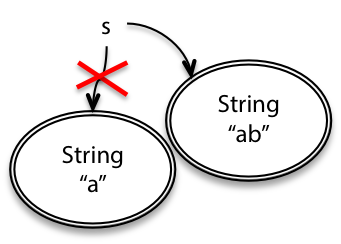
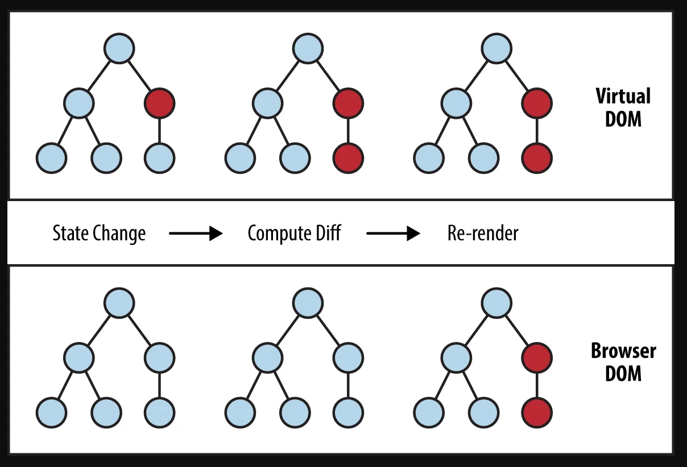
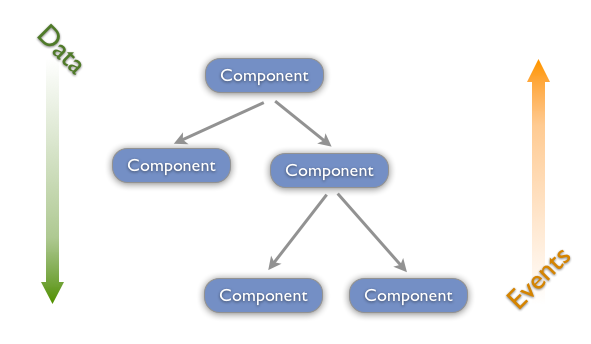
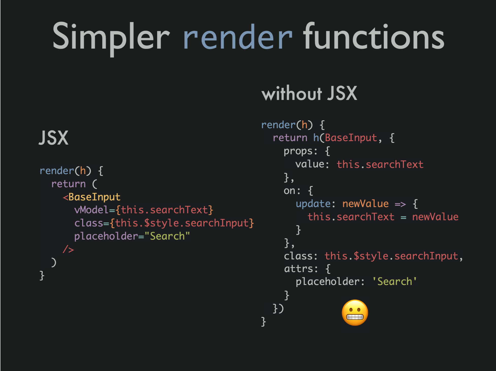
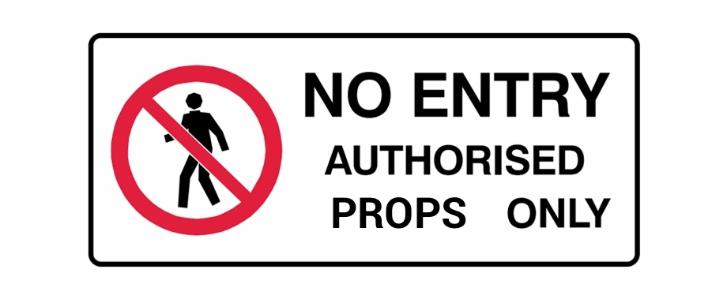

En programmation, une variable est immuable lorsque sa valeur ne peut plus
être modifiée après sa création.
En javascript les chaînes sont immuables par défaut. Lorsque l'on modifie
une chaîne, en réalité on créé une nouvelle chaîne et on l’assigne au même
nom de variable.
Pour faire simple, si l’on veut modifier la valeur d’une variable on créé
une nouvelle variable.
Pour ajouter un élément à un tableau, on créé un nouveau tableau en
concaténant les éléments de l'ancien tableau et le nouvel élément.
Un objet n’est jamais modifié mais il est copié avec la ou les valeurs qui
doivent être modifiées.
Un exemple avec React : le cas de l’état. On ne modifie jamais la
propriété state directement mais uniquement avec la méthode
setState.
Le code devient plus lisible et compréhensible.
Une fonction ne changera jamais une valeur sans que vous en soyez
informé.
Le code peut être optimiser plus facilement. Javascript est plus
performant lors qu'il échange la référence d’un ancien object par un
nouveau plutôt que de transformant l’ancien objet.

Sur un navigateur, lors que le DOM change, le navigateur doit effectuer
des opérations qui sont longues et coûteuses (tout est relatif, les
opérations s'effectuent en quelques ms), notamment le
rendu de l’arbre, le layout (ou reflow ou
relayout) et la peinture (repaint).
L’arbre de rendu est une représentation des éléments HTML qui seront
rendus sur la page et leurs styles associés.
Durant le layout le navigateur détermine la dimension et la
position de tous les éléments sur la page.
Ensuite durant le repaint le navigateur effectue les changements
visuels et/ou de contenu des élèments.
React utilise un DOM virtuel afin d’alléger le travail du navigateur.
Lorsque l’on appelle la méthode setState() (et que l’état du
composant est modifié) React définie le composant comme
dirty.
Ensuite React met à jour le DOM virtuel en appliquant les différences de
tous les composants dirty c’est l'étape de
réconciliation.
React effectue un traitement par lot et effectue une mise à jour unique du
DOM afin de réduire le nombre de reflow et de repaint.

Dans React le flux de données est unidirectionnel (liaison
unidirectionnelle). En anglais on retrouve les termes
Unidirectional Data Flow et One-way data binding.
Une architecture plus simple et donc plus facile à lire,
moins sujette aux erreurs car nous avons un meilleur contrôle des
données.
Debug plus facile car nous savons d'où provient la donnée.

Le JSX est un extension syntaxique de JavaScript qui ressemble à
du HTML ou du XML. C’est un langage de balisage qui inclus également du
Javascript.
Habituellement pour séparer les préoccupations on va séparer le
contrôleur et la vue.
Avec React on procéde différement, on va créer
des composants autonomes, en réduisant autant que possible leur
compléxité et leur responsabilité.
Cela ressemble à l’architecture
orientée micro-service pour un back-end.
JSX est une expression, après la compilation les expressions JSX
deviennent de appels de fonctions JavaScript dont l’évaluation renvoie des
objets JavaScript.
Cela nous permet d’utiliser du JSX dans des instructions
if, des boucles for, etc...
Comme avec le XHTML toutes les balises doivent être fermées.
La convention de nommage utilisée pour les propriétés est le lower camelCase.
Ce n’est pas obligatoire d’utiliser le JSX lorsque l’on utilise
React, donc si vous n’aimez pas la syntaxe JSX vous pouvez vous
en passez.

Lorsqu'une application grandit, on peut il faut utiliser
des outils de validation de types. Les plus courants sont Flow et
Typescript.
Si on ne souhaite pas utiliser ces extensions,
React fournit sa propre fonctionnalité de validation : les PropTypes.
PropTypes affiche un message d’avertissement dans la console Javascript
lorsqu'une valeur fournie ne respecte pas le type défini.
La validation ne s’effectue qu'en mode développement et donc ne ralentira
pas l’application en production.